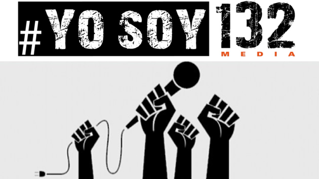
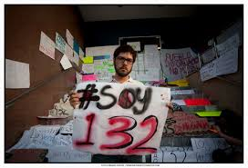

tras aquel llamado viernes negro donde enfrentaron al entonces candidato presidencial priista, Enrique Peña Nieto, en la Universidad Iberoamericana, acusándolo de asesino por la masacre de Atenco. 11 DE MAY 2012 Acorde al testimonio de los estudiantes ahí presentes, el enojo y posterior rechazo al candidato del PRI fue un consecuencia de los siguientes acontecimientos: Agentes de seguridad de EPN se colocaron en la entrada de dicho auditorio tratando de quitar carteles 'no convenientes' para EPN a los estudiantes que sí pertenecían a la Ibero. Cuando los estudiantes de la Ibero llegaron a la escuela ese día, se percataron que había una cantidad considerable de personas (aparentemente estudiantes) ajenas a la institución portando propaganda a favor de EPN ocupando las primeras filas del auditorio donde se realizaría la ponencia. Se hizo notar que había personas encargadas de tomar fotos a estudiantes que manifestasen algo en contra de EPN. Una persona ofrecía dinero (al parecer alrededor de $250) por no hacer preguntas incómodas al candidato del PRI. El movimiento 'Yo soy 132' surge entonces (sobretodo entre los estudiantes universitarios en México) para manifestar que no solo fueron 131 las personas inconformes con el cerco informativo y el control de los medios, que habemos muchos más los que tenemos voz y voto, que las cosas no pueden seguir igual.

MOVIMIENTO YO SOY 132
Lo que al día de hoy identificamos como la gota que derramó el vaso fue en caso de Atenco donde hubo 2 muertos, 253 personas detenidas brutalmente y 47 mujeres violadas por los policías del Estado de México. En este tema Peña Nieto se limitó a decir que asumía la responsabilidad sobre el acontecimiento lo cual provocó la indignación de los estudiantes que en seguida comenzaron a gritarle frases como: ¡Fuera! ¡La Ibero no te quiere! ¡Atenco no se olvida!
